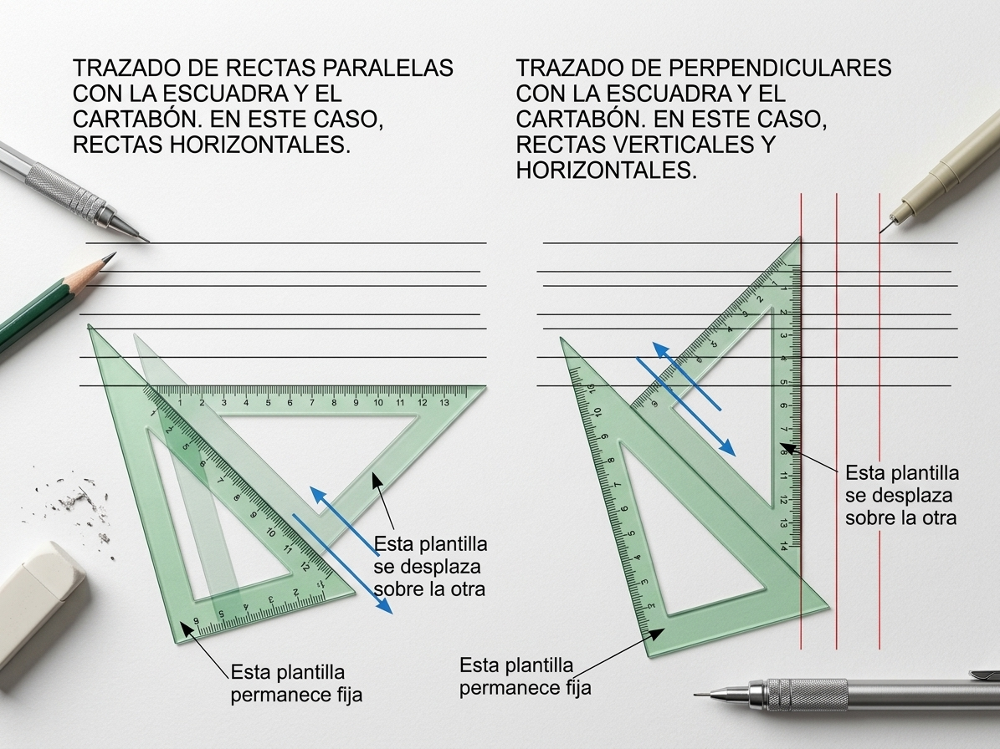
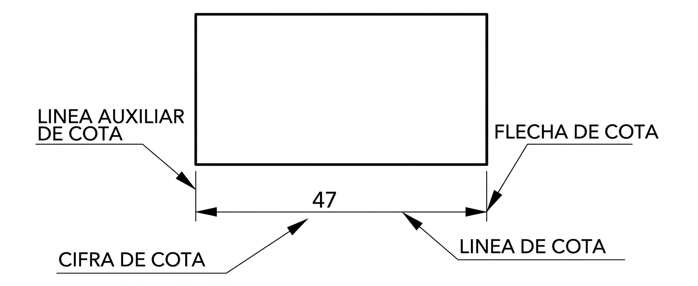
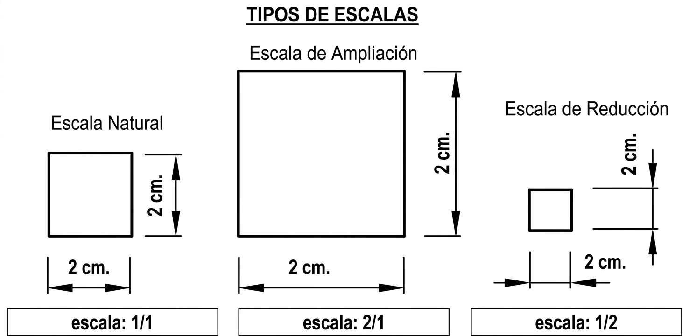

INTRODUCCIÓN: EL DIBUJO, NUESTRO PRIMER IDIOMA ✏️
Desde siempre, los seres humanos hemos usado dibujos para comunicarnos. Mucho antes que las letras, las imágenes servían para contar historias y compartir ideas. Este gran lenguaje universal se divide en dos tipos principales:
1. Dibujo Artístico 🎨
Es la forma más libre y personal de dibujar, donde el artista busca conectar con nuestras emociones. Piensa en un cómic, un retrato o el diseño de un personaje de videojuego.
- Objetivo: Expresar sentimientos, contar una historia o simplemente crear algo bello.
- Reglas: No existen reglas fijas. La imaginación y la creatividad son lo más importante.
- Resultado: Es subjetivo; cada persona puede interpretarlo de una manera diferente.
2. Dibujo Técnico 📐
Es un lenguaje universal y de alta precisión, diseñado para que una idea pueda ser construida en el mundo real sin errores. Es como el manual de instrucciones para fabricar cualquier cosa.
- Objetivo: Describir un objeto de forma exacta (medidas, materiales, forma) para su fabricación.
- Reglas: Sigue normas muy estrictas y estandarizadas que todo el mundo de la tecnología y la industria entiende.
- Resultado: Es objetivo; solo tiene una interpretación posible para evitar cualquier error.

Dibujo artístico.

Dibujo técnico.
En Tecnología, los dibujos técnicos son cruciales para la creación de bocetos y planos. Estos deben ser claros y concisos, sin ornamentos, para asegurar que no haya ambigüedad sobre la forma y las dimensiones del objeto representado.
TIPOS DE DIBUJOS TÉCNICOS
En tecnología, cuando queremos crear o solucionar algo, no pasamos de la idea al producto final de golpe. El proceso de diseño es un camino que va de lo general a lo concreto. Una vez que sabemos qué problema queremos resolver, empezamos a dibujar nuestras primeras ideas. A medida que avanzamos, nuestros dibujos se vuelven cada vez más precisos y detallados.
Boceto
El boceto es un dibujo a mano alzada, poco detallado, que transmite una idea inicial de cómo será el objeto final. Seguramente has hecho alguna vez un boceto para explicar una idea o para ayudar a localizar una calle haciendo un pequeño mapa. A menudo se emplean los sinónimos de "borrador" o "esbozo" para referirse a un boceto.
Croquis
El croquis es un dibujo también hecho a mano alzada, pero mucho más detallado que el boceto, ya que cuenta con medidas y otras anotaciones que permitan construir el objeto que describe. Es un dibujo bien proporcionado, acotado y completamente descrito para su construcción.
Planos
El plano es la representación gráfica definitiva de un objeto o proyecto, elaborada con la máxima precisión y detalle. A diferencia del boceto y el croquis, el plano no se realiza a mano alzada, sino que se dibuja utilizando herramientas de precisión, como reglas y escuadras, o más comúnmente, software de diseño asistido por ordenador (CAD).
El plano se distingue del croquis por las siguientes características clave:
- Normalización: Sigue un conjunto de normas y convenciones estandarizadas para asegurar que su interpretación sea universal.
- Representación a escala: Todas las dimensiones se dibujan de forma proporcional a su tamaño real, aplicando una escala específica.
- Uso de vistas normalizadas: Utiliza un sistema de vistas múltiples (alzado, planta, perfil) para describir la forma del objeto de manera completa.
- Carácter de documento técnico: Es el documento formal y final con toda la información necesaria para la fabricación o construcción.
INSTRUMENTOS DE DIBUJO TÉCNICO
Para que nuestros diseños pasen de una simple idea a un plano bien hecho, necesitamos las herramientas adecuadas. En el dibujo técnico, la regla, la escuadra, el cartabón y el compás no son opcionales: son fundamentales para lograr la precisión y la proporción que todo proyecto necesita.
TÉCNICAS DE TRAZADO DE LÍNEAS, CURVAS Y ÁNGULOS
Trazado de líneas Rectas
Para trazar una línea recta se usa siempre una regla. La regla se sujeta con firmeza con una mano y, con la otra, se dibuja la línea a lo largo de su borde. Se pueden usar las marcas milimetradas de la regla para controlar la longitud exacta del trazo.
Trazado de Rectas Paralelas
Recordemos: Dos rectas son paralelas si, por mucho que se prolonguen, nunca se cortan. El truco aquí es usar el cartabón como guía fija y la escuadra como herramienta de deslizamiento.
- Alineación inicial: Coloca el lado más largo de la escuadra (la hipotenusa) sobre la recta de referencia.
- Fijación de la guía: Coloca el cartabón firmemente junto a uno de los lados cortos de la escuadra (un cateto).
- El punto clave: Con una mano, sujeta el cartabón con fuerza para que no se mueva y actúe como un riel.
- Deslizamiento y trazado: Desliza la escuadra sobre el borde del cartabón hasta el punto donde necesites la nueva línea paralela.
- Trazar: Sin mover nada, traza la nueva recta. Esta será completamente paralela a la original.
📐 Trazado de Rectas Perpendiculares
Recordemos: Dos rectas son perpendiculares si se cortan formando un ángulo de 90° (un ángulo recto).
- Alineación inicial: Se realizan los mismos pasos 1 y 2 que para las paralelas: alinea la hipotenusa de la escuadra sobre la recta y coloca el cartabón como guía en un cateto.
- Fijación de la guía: Sujeta el cartabón firmemente.
- El giro de 90°: Sin mover el cartabón, gira la escuadra 90°, apoyando el otro cateto sobre el cartabón.
- Deslizamiento y trazado: Desliza la escuadra sobre el cartabón hasta el punto deseado.
- Trazar: Traza la recta. Esta será perpendicular a la original.

Trazado de líneas paralelas y perpendiculares.
Trazado de paralelas y perpendiculares con escuadra y cartabón.
📐 Trazado de una Circunferencia o un Arco
La técnica correcta para dibujar círculos o arcos con el compás es la siguiente:
- 📌 CENTRO: Pincha la aguja en el punto central.
- ↔️ RADIO: Abre los brazos hasta lograr el tamaño que quieres.
- ✍️ GIRO: Sujeta el compás siempre por el mango de arriba y rótalo con suavidad para dibujar.
Para un radio exacto: Mide primero la apertura con una regla (de 0 a la medida que necesites) y luego dibuja el círculo.
📐 Trazado de Ángulos
El transportador es un instrumento especialmente indicado para marcar ángulos que no se pueden obtener con la escuadra y el cartabón. Para medir un ángulo, sitúa el transportador de manera que su centro quede en el vértice del ángulo y el lado del ángulo coincida con la línea de base del transportador.
ACOTACIÓN
La acotación es el proceso por medio del cual quedan reflejadas en un plano las medidas reales de un objeto. Se llama cota a cada una de las medidas del objeto que han sido anotadas en el plano.
El fin de la acotación es conseguir una interpretación fiel y sin dudas del objeto representado, de modo que pueda ser fabricado sin necesidad de ninguna otra información. En los planos de fabricación de piezas las medidas lineales están en centímetros y los ángulos en grados. Si se fuera a usar una unidad de medida diferente, hay que especificarlo anotándolo en el cuadro de rotulación de la lámina.
Como se observa en la imagen adjunta, las cotas se componen de:
- Líneas auxiliares de cota: Establecen los límites de la línea de cota. Son perpendiculares al objeto y sobresalen 2 mm de la línea de cota. Se trazan con línea continua fina (0,2 mm).
- Línea de cota: Paralela al elemento que se acota. Es una línea fina y continua (0,2 mm) separada al menos 7 mm de la arista.
- Flechas de cota: Indican los extremos de la línea de cota. Sus lados forman un ángulo de 15° aproximadamente. Pueden sustituirse por trazos a 45°.
- Cifra de cota: Indica la medida real (normalmente en cm). Se sitúa centrada sobre la línea de cota y debe leerse en la posición natural del plano o girándolo 90° a la derecha.

Elementos de la acotación.
ESCALAS
La escala es la relación entre las dimensiones del objeto representado y las del objeto real. La utilidad de la escala es la de poder representar cualquier objeto en un formato de medidas estándar como son los dibujos sobre papel.
La escala no solo se emplea en dibujo y en el trazado de planos, sino que también se aplica en la construcción de maquetas y modelos. Para que la persona que lee el plano entienda las dimensiones reales del objeto se han de seguir unas normas de denominación de cuántas veces se han ampliado o reducido las dimensiones del objeto en su representación.
Escala natural
El tamaño del objeto representado coincide con el del modelo real. Se emplea sobre todo en fabricación de piezas. Se escribe 1:1.
Escala de reducción
La representación del objeto es menor que el modelo real. En la fabricación de piezas es frecuente emplear escalas 1:2 (el dibujo es la mitad del tamaño real) o 1:5. En los planos de viviendas se usan escalas entre 1:50 y 1:100. Para mapas de terrenos se pueden encontrar planos a partir de 1:25000.
Escala de ampliación
La representación del objeto es mayor que el modelo real. Se utiliza para representar piezas muy pequeñas. Ejemplos de este tipo de escalas serían 2:1 (el dibujo es el doble del tamaño real), 5:1 o 10:1.

Tipos de escalas.
Explicación sobre Escalas.
VISTAS
Para poder comprender los objetos representados en los dibujos técnicos, es necesario que queden correctamente definidos y dibujados. Para ello se emplean las vistas del objeto, que son proyecciones ortogonales (perpendiculares) del objeto sobre un plano, es decir, sus representaciones bidimensionales (2D) obtenidas desde diferentes puntos de vista para mostrar sus formas tridimensionales (3D).
Tipos de Vistas Principales
Aunque un objeto tiene seis vistas posibles (correspondientes a sus seis caras), a menudo basta con dibujar solo tres vistas para obtener información completa y necesaria para su diseño y fabricación.
Alzado
La vista frontal del objeto. Es la que define la forma principal y se considera la más importante. Muestra el alto y el ancho del objeto.
Planta
La vista superior del objeto, que se dibuja debajo del alzado. Muestra el ancho y la profundidad.
Perfil
La vista lateral del objeto (izquierdo o derecho). Proporciona información adicional. Muestra la profundidad y el alto.

Vistas de un objeto en Sistema Diédrico.
Coincidencia de dimensiones:
Para representar piezas mediante un sistema, las vistas siempre se dibujan en el mismo orden y posición:
- La anchura de la planta y del alzado es la misma.
- La altura del alzado y de ambos perfiles debe coincidir.
- La profundidad de la planta y del perfil es igual.
Sistemas Europeo y Americano
Hay dos sistemas habituales de representación, el americano y el europeo, que será el que manejaremos en esta unidad. La diferencia principal entre ambos sistemas es la distribución de las vistas en el papel.
También es imprescindible orientar correctamente la planta con respecto al alzado y al perfil. Prolongar horizontal y verticalmente las aristas nos ayudará a hacerlo. Un error frecuente es no orientar bien la planta con respecto al alzado y dibujarla girada.

Sistema americano y europeo.
Vistas de una figura I.
Vistas de una figura II.
Ponte a prueba 🎮
¿Quieres practicar cómo obtener las vistas de una pieza en Dibujo Técnico? Puedes hacerlo con una fantástica herramienta online con la que poner a prueba tus conocimientos de una manera muy visual e interactiva. La web te presenta una figura en 3D que puedes girar con el ratón para observarla desde todos los ángulos. Tu misión es dibujar el alzado, la planta y el perfil en los recuadros correspondientes.
Abrir Simulador de Vistas 3DPERSPECTIVAS
Imagina que quieres dibujar un cubo. Si lo dibujas como un simple cuadrado, parece plano, ¿verdad? Pero si quieres que parezca un objeto real, que puedas "casi" tocar, necesitas darle profundidad. ¡Y ahí es donde entra la magia de las perspectivas!
En pocas palabras, una perspectiva en dibujo técnico es una técnica que usamos para representar objetos de tres dimensiones (ancho, alto y profundo) en una superficie de dos dimensiones (como una hoja de papel), de manera que parezcan reales y con volumen.
¿Por qué un objeto se ve diferente según cómo lo mires?
El truco de la distancia: Los objetos que están más lejos parecen más pequeños. Si miras una carretera recta y larga, parece que los dos lados se van a juntar en un punto a lo lejos. Ese punto se llama punto de fuga. Las perspectivas utilizan esta idea para engañar a nuestro ojo y crear esa sensación de profundidad.
Los 3 Tipos de Perspectivas Más Comunes
1. Perspectiva Isométrica: La "Todoterreno"
Es una de las más usadas en dibujo técnico. Su nombre "iso" significa "igual" y "métrica" significa "medida".
- ¿Cómo funciona?: El objeto se apoya en tres ejes con la misma inclinación. Las líneas paralelas en la realidad se mantienen paralelas en el dibujo. ¡No hay puntos de fuga!
- Ventaja principal: No deforma el objeto. Las medidas son reales o a escala, perfecta para que los técnicos entiendan bien una pieza.
2. Perspectiva Caballera: La Rápida y Sencilla
Esta perspectiva es genial porque es muy fácil y rápida de dibujar.
- ¿Cómo funciona?: Una de las caras se dibuja de frente, tal y como es. Las líneas de profundidad se dibujan hacia atrás con un ángulo (normalmente 45º) y sus medidas se suelen reducir a la mitad.
- Ventaja principal: Perfecta para piezas con una cara principal muy importante o detallada.
3. Perspectiva Cónica: La Artística y Realista
Esta es la que más se parece a cómo ven nuestros ojos el mundo.
- ¿Cómo funciona?: Utiliza uno, dos o hasta tres puntos de fuga hacia donde convergen las líneas paralelas.
- Desventaja en técnico: Aunque es muy realista, deforma las formas y ángulos, por lo que no es la mejor para dar medidas exactas.

Perspectivas Caballera, Isométrica y Cónica.
Tabla Resumen de Perspectivas
| Tipo de Perspectiva | Característica Principal | ¿Cuándo se usa? |
|---|---|---|
| Isométrica | No deforma el objeto, sin puntos de fuga. | Para planos técnicos, montajes, videojuegos. |
| Caballera | Una cara se ve de frente, sin distorsión. | Para piezas con una cara compleja o principal. |
| Cónica | La más realista, usa puntos de fuga. | En arquitectura, arte, para ver el resultado final. |
Guía para Trazar una Perspectiva Isométrica
Dibujar en isométrico es, sobre todo, ser ordenado. No se trata de "que se parezca", sino de seguir unas reglas muy concretas para que cualquiera entienda nuestra pieza a la perfección.
Paso 1: Los Cimientos - Los Ejes Isométricos: Todo dibujo isométrico empieza construyendo su esqueleto: el eje Z (vertical) y los ejes X e Y (a 30º de la horizontal), formando ángulos de 120º entre sí.
Paso 2: La "Caja" que Contiene la Pieza: Antes de dibujar la pieza, se dibuja un prisma o cubo que la contenga por completo ("encajado"), usando las medidas máximas de alto, ancho y profundo.
Paso 3: "Esculpiendo" la Pieza Dentro de la Caja: Con la caja guía, se quitan los "trozos" sobrantes para revelar la pieza. Se trasladan las medidas de los detalles desde las vistas.
Paso 4: El Caso de las "Líneas No Isométricas": Las rampas o caras inclinadas tienen aristas que no son paralelas a los ejes principales. Estas líneas no se miden directamente; se dibujan uniendo sus puntos de inicio y fin.
Paso 5: Limpieza y Acabado Final: Una vez definida la forma, se repasan las aristas vistas, se dibujan las aristas ocultas con línea de trazos si es necesario, y se borran todas las líneas guía.
Trazar los ejes de la Perspectiva Isométrica.
Perspectiva Isométrica a partir de las vistas.
Resumen de las Reglas de Oro para no Perderse:
- Empieza siempre por los 3 ejes isométricos (uno vertical, dos a 30º).
- Todas las medidas se toman únicamente sobre los ejes o sobre líneas paralelas a ellos.
- Todas las líneas que dibujes deben ser paralelas a uno de los tres ejes, a menos que sea una línea inclinada (no isométrica).
- Las líneas no isométricas no se miden, se dibujan uniendo sus puntos extremos.
- Los círculos en las vistas se convierten en óvalos (elipses) en isométrico.
Entiende las Vistas y el 3D 🧊
¿Te cuesta imaginar la forma de un objeto viendo "solo" sus vistas? Con esta herramienta interactiva podrás construir modelos 3D hechos de "cubos" viendo sus tres vistas dibujadas. Puedes girar la figura 3D para comprobar cómo cada cara del objeto se corresponde perfectamente con cada una de las vistas.
Abrir Constructor 3D interactivoSOFTWARE EN DISEÑO TÉCNICO
En la actualidad es más frecuente el uso de software de diseño técnico empleando programas específicos para este tipo de trabajos. Los más utilizados son: AutoCAD, QCad, SolidWorks y SketchUp entre otros.
📐 SketchUp Free
SketchUp Free es una potente herramienta de modelado 3D a la que puedes acceder directamente desde tu navegador web, sin necesidad de instalar nada. Es ideal para estudiantes de Tecnología porque es famoso por ser el software 3D más fácil e intuitivo de usar.
¿Para qué te sirve?
- Visualizar en 3D: Construir rápidamente un objeto en perspectiva isométrica, ayudándote a entender cómo se relacionan la Anchura, Altura y Profundidad.
- Ver las Vistas: Comprobar si tus vistas de Alzado, Planta y Perfil son correctas, simplemente cambiando el ángulo de la cámara.
- Modelar con Facilidad: Su herramienta estrella, Empujar/Tirar (Push/Pull), te permite convertir cualquier forma 2D en un volumen 3D con un solo clic.
💻 Guía de Introducción Rápida a SketchUp Free
1. Acceso y Entorno
- Abrir el programa: Vayan a la página oficial de SketchUp Free e inicien la aplicación web.
- Iniciar un Nuevo Modelo: Seleccionen una Plantilla (Template) adecuada, por ejemplo, "Simple - Milímetros".
- Los Ejes y el Personaje: Verán los ejes de colores: Azul (Z) para la Altura, Verde (Y) para la Profundidad, y Rojo (X) para la Anchura.
2. Herramientas de Navegación (¡Lo más Importante!)
| Herramienta | Uso con el Ratón | Función en 3D |
|---|---|---|
| Orbitar | Rueda central presionada | Gira la vista alrededor del modelo. |
| Panorámica | Rueda central + Shift (Mayús) | Desplaza la vista horizontal o verticalmente. |
| Zoom | Rueda central al girar | Acerca o aleja la vista. |
3. Herramientas Clave de Modelado
A. Dibujo de la Base (2D): Usen Línea (L) o Rectángulo (R) para crear una superficie plana. Para ser precisos, escriban las dimensiones separadas por coma (ej. 300,200) y pulsen Enter.
B. Dando Volumen (3D): Con Empujar/Tirar (P), hagan clic en una superficie, arrastren y escriban la altura deseada.
C. Cortes y Acabados: Usen Cinta Métrica (T) para crear guías y Borrar (E) para eliminar líneas sobrantes.
Próximo Reto 🎯
Intenta modelar un bloque escalón usando el Rectángulo para la base, Empujar/Tirar para la altura, y luego dibujando el corte del escalón en la cara superior y usando Empujar/Tirar otra vez para vaciarlo.
Material Didáctico y Evaluación
Accede a toda la documentación de trabajo, herramientas de repaso interactivas y ejercicios prácticos de la unidad.
2. Práctica y Repaso Interactivo
3. El Reto Práctico
¡Acepta el Desafío Cubo Soma 3D!
Diseña, acota, dibuja las vistas y construye las 7 piezas del rompecabezas en equipo. ¿Seréis capaces de alcanzar la máxima nota completando el reto 3D?